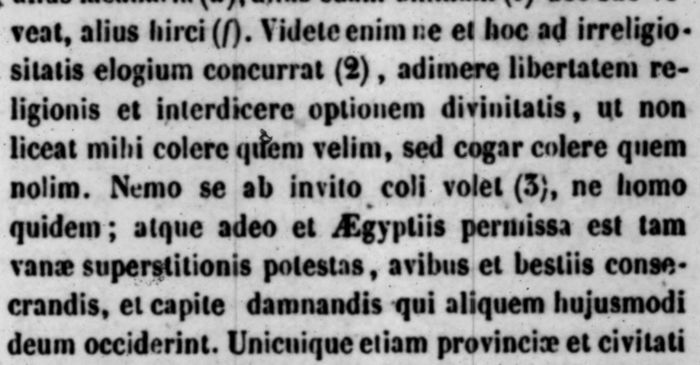

Apology, Chapter 45
Latin: Migne, PL 1, cols. 499–500 (scan). Spelling regularised (æ as ae). The passage begins at the foot of col. 499 with the word “Sic”. Highlighted: the words Lecky quotes.
So too Epicurus makes light of every torment and pain, declaring a moderate one contemptible and a great one not lasting. But we, who are judged under God as the watcher of all things, and who foresee eternal punishment from him, rightly run to meet innocence alone, in view of the fullness of our knowledge, and the difficulty of hiding-places, and the greatness of a torment not lasting but everlasting, fearing him whom he too must fear who judges those who fear, God, not the proconsul.
Original Latin
Sic et Epicurus omnem cruciatum doloremque depretiat, modicum quidem contemptibilem pronuntiando, magnum vero non diuturnum. Enimvero nos qui sub Deo omnium speculatore dispungimur, quique aeternam ab eo poenam providemus, merito soli innocentiae occurrimus, et pro scientiae plenitudine, et pro latebrarum difficultate, et pro magnitudine cruciatus, non diuturni, verum sempiterni, eum timentes, quem timere debebit et ipse qui timentes iudicat, Deum, non proconsulem timentes.
Doubtful points
The passage is hard Latin (dispungimur, “are reckoned up, examined”; latebrarum difficultate, “the difficulty of hiding-places”, i.e. of escape from God’s sight). The translation is a first draft and may be improved. The sentence “Sic” at the head of this extract continues an argument begun on the left-hand column, which I did not transcribe. Migne’s notes and variants are omitted.
“The liberty of religion” (ch. XXIV, PL 1 cols. 417–418)
Latin: Migne, PL 1, Apologeticus ch. XXIV, cols. 417–418, scan n226 (in this stretch the image number equals the djvu object number). Migne’s footnote numbers omitted. Highlighted: the plea for religious liberty to which Lecky’s note 8 points.

… Let one man worship God, another Jupiter; let one lift suppliant hands to heaven, another to the altar of Faith; let one, if you think so, count the clouds as he prays, another the ceiling panels; let one vow his own life to his god, another a goat’s. For see whether this too does not go to make up the charge of irreligion: to take away the liberty of religion and forbid the choice of a god, so that I may not worship whom I will, but am forced to worship whom I will not. No one, not even a man, will wish to be worshipped by the unwilling; and so even the Egyptians have been allowed the right to their empty superstition, of consecrating birds and beasts and condemning to death anyone who kills one of these gods.
Translation: this edition’s draft. The opening sentence (“Colat alius …”) was read on the same image; the picture shows only the highlighted lines and what follows.
Original Latin
… Colat alius Deum, alius Jovem; alius ad cœlum supplices manus tendat, alius ad aram Fidei; alius, si hoc putatis, nubes numeret orans, alius lacunaria; alius suam animam deo suo voveat, alius hirci. Videte enim ne et hoc ad irreligiositatis elogium concurrat, adimere libertatem religionis et interdicere optionem divinitatis, ut non liceat mihi colere quem velim, sed cogar colere quem nolim. Nemo se ab invito coli volet, ne homo quidem; atque adeo et Ægyptiis permissa est tam vanæ superstitionis potestas, avibus et bestiis consecrandis, et capite damnandis qui aliquem hujusmodi deum occiderint.
Lecky (vol. II, ch. IV, text at note 8) names Tertullian, writing under pagan persecution, as one of “the most conspicuous advocates of the duty of absolute and complete toleration”. This chapter is the classic place, often cited as the first appearance of the phrase “libertas religionis”: Tertullian turns the charge of irreligion back on the persecutors.
Lecky’s Quotation Compared
| Lecky, 1865 | Migne |
|---|---|
| ‘Sic et Epicurus omnem cruciatum doloremque depretiat modicum quidem contemptibilem pronuntiando magnum vero non diuturnum. . . . Enimvero nos qui sub Deo omnium speculatore dispungimur, quique æternam ab eo pœnam providemus merito soli innocentiæ occurrimus et pro scientiæ plenitudine et pro magnitudine cruciatus non diuturni verum sempiterni.’ (Apol., cap. xlv.) | Sic et Epicurus omnem cruciatum doloremque depretiat, modicum quidem contemptibilem pronuntiando, magnum vero non diuturnum. Enimvero nos qui sub Deo omnium speculatore dispungimur, quique aeternam ab eo poenam providemus, merito soli innocentiae occurrimus, et pro scientiae plenitudine, et pro latebrarum difficultate, et pro magnitudine cruciatus, non diuturni, verum sempiterni, eum timentes, quem timere debebit et ipse qui timentes iudicat, Deum, non proconsulem timentes. |
Differences: (1) the three dots after “diuturnum” mark a gap that is not there in Migne, whose next word is “Enimvero” (an edition with an intervening sentence is possible; I have not checked); (2) “et pro latebrarum difficultate” (“and for the difficulty of hiding-places”) is missing from Lecky’s text without a mark, which makes “plenitudine” and “magnitudine” sit directly together; (3) he ends at “sempiterni”, before the clause that says what the fear is directed at, the God “whom the judge too must fear”, not the proconsul. Spelling and punctuation are otherwise modernised. The sense Lecky wants (a fear of everlasting torment makes Christians the more careful) is plainly in the passage.
Editor’s notes on this page
In Chapter III Lecky uses Tertullian to show that the early Church taught that the fear of hell was a moral motive of an altogether higher order than any earthly punishment. Note 136 gives, in Latin, a passage of the Apology (c. 45) in which Tertullian says that Epicurus makes light of pain by calling it either small and therefore contemptible, or great and therefore not lasting, while Christians, who live under a God who sees everything and foresee an eternal penalty, rightly fear it.
Lecky’s Latin is accurate, but he leaves out one clause without a mark, and adds an ellipsis where the original has none. See the comparison.
Further down the rabbit hole
Sources that Lecky cites in the notes next to the ones that cite this page.
- Simancas, De Catholicis InstitutionibusAn inquisitor’s handbook: no faith with heretics, and torture
- Bayle, Commentaire philosophiqueBayle answers the Mosaic law objection to toleration
- Bodin, Démonomanie des SorciersThe great lawyer who wrote the witch-hunters’ handbook
- Daillé, De poenis et satisfactionibus humanisWould even the Virgin Mary pass through the fire? A Protestant reads the Fathers on purgatory
- Hilary of Poitiers, Contra AuxentiumA bishop’s protest: the persecuted Church has become the persecutor
- Taylor, A Discourse of the Liberty of ProphesyingLecky quotes Taylor accurately on water and Spirit


Backlinks
Every place in Rationalism in Europe that links to this page (generated automatically when the site is built).